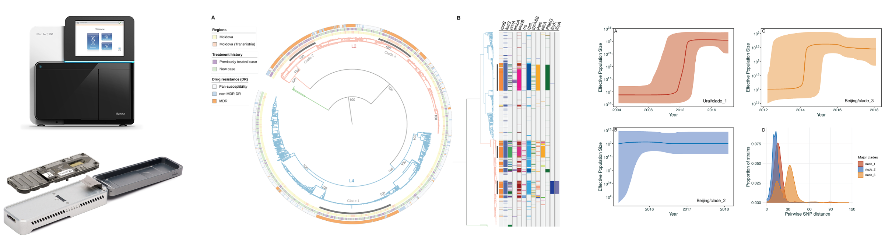

Genomic Analysis and Phylodynamics Workshop
Pre-workshop Instructions
Please click the link below for instructions to download and install all data and software required for this course:
Pre-workshop InstructionsSchedule - National Taiwan University 2025
| Date | Time | Session | Modules |
|---|---|---|---|
| Saturday 3rd May | 9:30–10:30 | Lecture 1: Introduction and Key Concepts | • Course outline • Introduction to next generation sequencing and genomic epidemiology |
| 10:40–12:40 | Practical Session 1: Whole Genome Sequence Data Analysis | • Obtaining sequencing data • Data manipulation and QC • Reference-based mapping and de novo assembly |
|
| 12:40–13:40 | Lunch Break | ||
| 13:40–14:15 | Practical Session 1 (cont.): Whole Genome Sequence Data Analysis | • Catch-up, overview, QA | |
| 14:15–15:15 | Lecture 2: Variant Detection and Phylogenetic Trees | • What is a variant? How do we call variants? • Variant calling software and QC • What are phylogenetic trees? • Types of phylogenies, phylogenetic uncertainty (bootstrapping etc.) |
|
| 15:30–18:00 | Practical Session 2: Variant Calling and Maximum Likelihood Trees | • Variant calling • SNP filtering and QC • Building SNP matrices • Aligning consensus sequences • Producing ML trees |
|
| Sunday 4th May | 9:30–11:00 | Lecture 3: Practical Applications of WGS and Phylogenetics | • Species identification • Resistance and plasmid profiling • Transmission • Applications in real-world datasets |
| 11:00–12:00 | Practical Session 3: Timed Phylogenetic Trees | • One-step timed phylogenetic tree with BEAST2 • Two-step timed phylogenies using ML + Bayesian frameworks |
|
| 12:00–13:00 | Lunch Break | ||
| 13:00–14:30 | Practical Session 3 (cont.): Timed Phylogenetic Trees | • (cont.) One-step timed phylogenetic tree • Two-step timed phylogenies using ML + Bayesian frameworks |
|
| 14:45–16:45 | Practical Session 4: Transmission and Profiling | • Identifying species, serotypes, and lineages from WGS • Inferring transmission networks/clusters |
|
| 16:45–17:00 | Closing Remarks - Short Course | • Short course summary and feedback collection | |
| Monday 5th May (Advanced) | 9:00–10:45 | Lecture 4: Advanced Applications of WGS | • Phylogeography and phylodynamics • Recombination • Average Nucleotide Identity (ANI) • Mixed infection • Fitness and selection |
| 11:00–12:00 | Practical Session 5: Mixed Infection, Recombination and ANI | • Identifying mixed infection • Calculating ANI • Testing for recombination |
|
| 12:00–13:00 | Lunch Break | ||
| 13:00–14:00 | Practical Session 5 (cont.): Mixed infection, Recombination and ANI | • (cont.) Identifying mixed infection • Calculating ANI • Testing for recombination |
|
| 14:15–15:30 | Practical Session 6: Phylogeography and Phylodynamics | • Phylogeography (ancestral state reconstruction) • Phylodynamic analysis with BEAST2 (Skyline analysis) |
|
| Tuesday 6th May (Advanced) | 9:00–12:00 | Practical Session 7: Fitness and Selection | • Strain-specific fitness (LBI) • Site-specific selection (homoplasy, dN/dS) • GWAS |
| 12:00–12:30 | Closing Remarks - Advanced Course | • Full course summary and feedback collection |
If you have any questions, please get in touch.